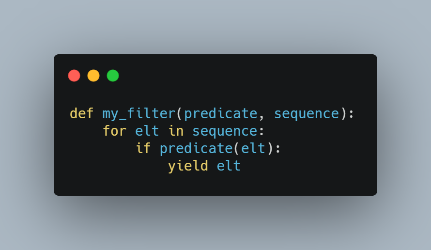

Notes d'apprentissage de Python : traitement des séquences avec un style fonctionnel - filter
Contenu
Contexte
Ce billet s’inscrit dans une série de billets sur le traitement des séquences avec un style fonctionnel en Python.
NB : La version de Python utilisée dans les exemples de code est la version 3.
Principe
La fonction filter est native et prend en paramètre une fonction et une séquence d’éléments ; elle retourne un objet iterator.
La fonction doit prendre un paramètre dont le type correspond aux éléments de la séquence et retourne un booléen (on peut parler de fonction prédicat ou de prédicat).
L’objet iterator est une nouvelle séquence d’éléments ne comportant que les éléments de la séquence initiale pour lesquelles la fonction a retourné vrai : la séquence de départ a été filtrée des éléments faux pour le prédicat.
Par exemple, pour obtenir la liste des entiers strictement positifs inférieurs strictement à 10, avec une boucle for on pourrait procéder comme suit :
|
|
Ce qui donne comme affichage :
|
|
On pourrait pour faire la même chose écrire une compréhension comme ce qui suit :
|
|
|
|
Avec la fonction filter, cela nous donne :
|
|
|
|
L’écriture de la compréhension et de la fonction filter sont plus compactes que celle de la boucle for.
La fonction filter retourne un iterator, on doit d’abord le convertir en liste avant de pouvoir l’afficher sous cette forme.
La fonction filter retourne un iterator
la fonction filter retourne un objet iterator, il est assez facile de le constater. Examinons, le code ci-après :
|
|
Si on exécute ce code on aura un affichage similaire à celui ci_dessous :
|
|
L’objet iterator est un objet filter. Il possède des méthodes __iter__ et __next__ nécessaires pour qu’un objet implémente le protocole iterator.
Si on souhaite être précis, la compréhension (house for house in houses if house.startswith("t")) est un véritable équivalent de filter(lambda s: s.startswith("t"), houses), mais pas [house for house in houses if house.startswith("t")] ou la boucle for ci-après :
|
|
A proprement parler ces deux derniers cas produisent des listes et non des objets iterator.
Avec une boucle for pour faire un vrai équivalent à filter, il faut faire une fonction génératrice, comme dans l’exemple ci-dessous :
|
|

Cette fonction retourne un iterator et s’utilise comme tel :
|
|
Ce qui donne :
|
|
Ce qui est intéressant avec les objets iterator, c’est qu’ils sont paresseux et qu’ils peuvent représenter des séquences potentiellement infinies, les éléments n’étant générés qu’à la demande. On peut donc avoir des expressions comme ce qui suit, count produisant lui-même un iterator et une séquence infinie de nombres entiers à partir d’une valeur de départ. Par exemple pour avoir un iterator représentant les nombrs impairs :
|
|
La variable odd_numbers contient un iterator que l’on peut ensuite manipuler comme tel :
|
|
La fonction takewhile de itertools extrait des valeurs tant que le prédicat passé comme premier paramètre est vraie (ici la lambda lambda x: x < 100).
On peut bien sûr faire quelque chose d’équivalent avec une compréhension :
|
|
Personnellement, je préfère utiliser filter plutôt qu’une compréhension dans un cas comme celui-ci, à moins que je ne souhaite avoir directement une liste. En effet, l’expression me paraît plus compact et traduisant mieux la sémantique. La bonne pratique dans l’écosystème Python est quand même de privilégier les compréhensions qui sont vue comme étant plus pythonique
Filtrer avec None
Il est possible de passer comme premiere paramètre à filter la valeur None plutôt qu’une fonction. Dans ce cas, c’est la fonction identité qui est utilisée comme fonction de filtre. Ainsi toute valeur pouvant s’évaluer à faux dans un contexte booléen sera filtré.
Il faut rappeler pour ceux qui viennent de Java ou de C# par exemple, qu’en Python il n’y a pas que les valeurs True et False qui s’évalue comme un booléen, du moins dans des contextes où l’on est en droit d’attendre un booléen comme la condition d’un if ou d’un while ou ici la valeur de retour d’une fonction qui est utilisée comme un prédicat pour filtrer une séquence d’éléments.
Ainsi, en Python les valeurs suivantes s’évalue à faux dans un contexte booléen : False, None, [], (), {}, set(), "", range(0), 0, 0.0, 0j.
Illsutrons tout cela avec un exemple :
|
|
Cela nous donnera comme affichage dans la console après exécution de ces lignes :
|
|
Cela peut être un truc intéressant à savoir pour par exemple supprimer d’une séquence de listes les éléments correspondant à la liste vide ou à None.
Filtrer négativement
Si nous reprenons la liste ["tyrell", "stark", "lannister", "tarly", "baratheon", "targaryen"], imaginons que je veuille garder toutes les valeurs qui ne commencent pas par la lettre “t”. Je pourrais écrire :
|
|
Vous avez une alternative fournit par le module itertools, avec la fonction https://docs.python.org/fr/3/library/itertools.html#itertools.filterfalse[filterfalse].
|
|
Ce qui donne si on exécute le script :
|
|
Tout comme filter, filterfalse prend en paramètre une fonction et une séquence et retourne un iterator.
Tout comme filter, on peut donner à filterfalse la valeur None à la place d’une fonction, avec un fonctionnement similaire : c’est la fonction identité qui sera utilisé avec une interprétation de la valeur retournée dans un contexte booléen, sauf que cette fois-ci ce sont les valeurs s’évaluant à True qui seront supprimées.
|
|
Ce qui donnera :
|
|
Synthèse
La fonction filter est une fonction native de Python. Elle prend en paramètre une fonction et un iterator ; elle retourne un nouvel iterator ne contenant que les éléments de l'iterator passé en paramètre pour lesquels la fonction passée en paramètre renvoie vrai.
On peut passer la valeur None au lieu de passer une fonction, dans ce cas c’est la fonction identité qui sera utilisée, les valeurs étant alors interprétées dans un contexte booléen.
La fonction filter a un double négatif caché dans itertools, https://docs.python.org/fr/3/library/itertools.html#itertools.filterfalse[filterfalse].
L’ensemble du code du billet est disponible dans un gist.
Ressources
- Billet chapeau sur le traitement des séquences avec un style fonctionnel
- Billet sur map
- Billet sur reduce
- Billet sur flatmap
- gist des exemples du billet
- Notion de Collection Pipeline
- Article map(), filter() et reduce () ?
- RxJS Marbles
- RxPy
- ReactiveX
Auteur TGITS
Modifié 2021-05-07